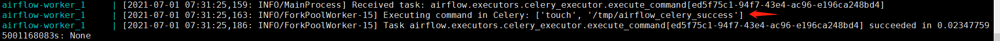
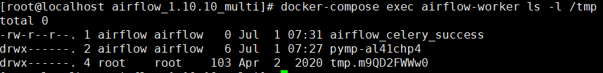

Apache Airflow Celery 消息中间件命令执行（CVE-2020-11981）¶
Apache Airflow是一款开源的，分布式任务调度框架。在其1.10.10版本及以前，如果攻击者控制了Celery的消息中间件（如Redis/RabbitMQ），将可以通过控制消息，在Worker进程中执行任意命令。
由于启动的组件比较多，可能会有点卡，运行此环境可能需要准备2G以上的内存。
参考链接：
- https://lists.apache.org/thread/cn57zwylxsnzjyjztwqxpmly0x9q5ljx
- https://github.com/apache/airflow/pull/9178
漏洞环境¶
依次执行如下命令启动airflow 1.10.10
#初始化数据库
docker compose run airflow-init
#启动服务
docker compose up -d
漏洞利用¶
利用这个漏洞需要控制消息中间件，Vulhub环境中Redis存在未授权访问。通过未授权访问，攻击者可以下发自带的任务airflow.executors.celery_executor.execute_command来执行任意命令，参数为命令执行中所需要的数组。
我们可以使用exploit_airflow_celery.py这个小脚本来执行命令touch /tmp/airflow_celery_success：
pip install redis
python exploit_airflow_celery.py [your-ip]
查看结果：
docker compose logs airflow-worker
可以看到如下任务消息：

docker compose exec airflow-worker ls -l /tmp
可以看到成功创建了文件airflow_celery_success：
